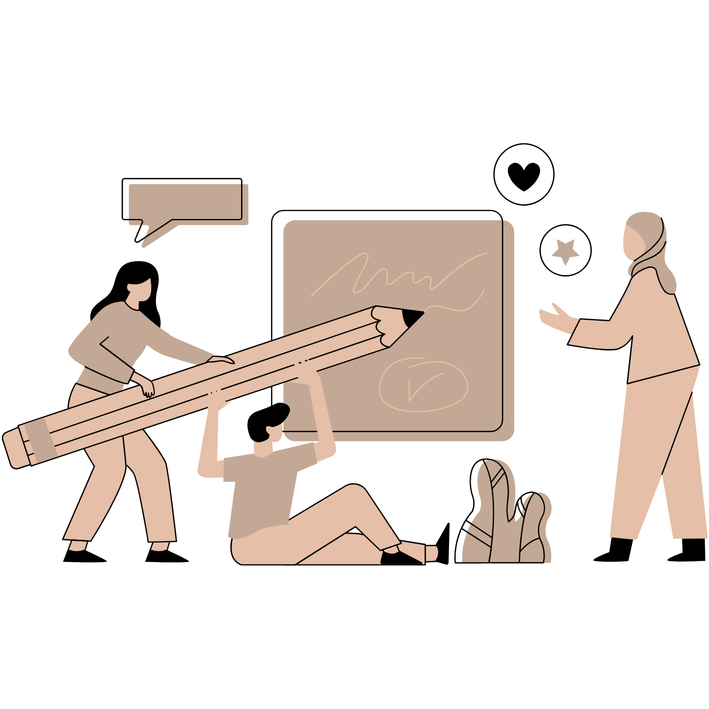
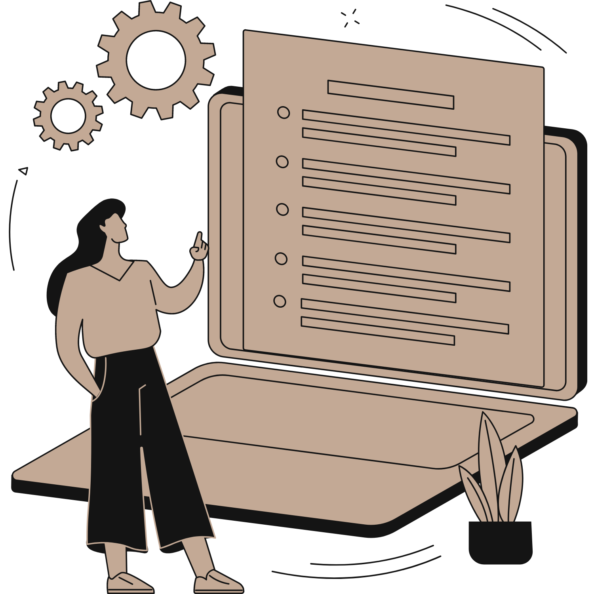

Nathanel Corpuz
Web
Developer
I build websites with passion.
I use React for writing front-end code, MongoDB for data management, and Express for developing back-end over the Node.js server platform.
Nathanel Corpuz
INFJ-T | Formalist
Who I am and what I do now
I love designing, coding, and overall improving on web components.
I am currently developing personal projects and open for any work opportunities.
See my workWho I am and what I do now
I love designing, coding, and overall improving on web components.
I am currently developing personal projects and open for any work opportunities.
See my workHow I started coding
After life pushed me to follow an amazing 5-year journey in customer service and virtual assistance, it began with a google search about web development and writing my first hello world line of code around 2020. It is always my dream to have a career in the tech industry, even before college.
When I'm not coding
I take care of my 7 cats and 1 dog. In my free time, I play Tekken 7 and do new and replay playthroughs of single player titles in steam such as the classic Mass Effect trilogy, Horizon Zero Dawn, Bioshock series, and more. I'm currently watching Big Bang Theory in Netflix. I plan to buy a drumset as soon as I save money from the first tech job I'll land.
My musicMy coding journey
tldr: At the time of writing, though my coding career is relatively new, here are some milestones I am proud of:
- - Around a total of 1000 commits in GitLab and GitHub combined in the past 12 months
- - A certificate of completion from Zuitt Coding Bootcamp with an extra "best in the batch" certificate from completing one of the required projects
- - A full-stack e-commerce React SPA website that will soon be used for official business.
Now that I've introduced you to my achievements, this is the part where I tell you about the things I am most proud of, my challenges and failures. Here are some of the moments in my recent career transition where I spent countless hours of doubts, fears, and lack of self confidence throughout my coding journey.
I failed a local coding bootcamp before Zuitt. This was around 2021, when I was a bright-eyed aspiring web developer with nothing but raw and the most basic html, css, and javascript knowledge at hand. The coding bootcamp I entered was great, filled with super helpful people with a thriving community of professionals as instructors. It was an unfortunate time since I was not able to keep up with the pace of the program since I still had so many gaps in the basic knowledge of web development foundations. Where my hope almost diminished, my desire to keep moving forward was in an all time high.
I diagnosed myself with a learning disability. After failing the bootcamp, my self-confidence was so low that I figured I might have a learning problem due to some issues I had when I was a child. To work on this, I leveraged my love for learning and went through the whole primary and secondary curriculum for Mathematics in Khan Academy for 8 straight months. I relied on my partner for food and shelter during these times.
Not having a degree while pursuing a software career ate away my nights. I was so confused whether or not should I complete a bachelor's degree first, or utilize Zuitt's coding bootcamp to kickstart my web development career, since I'm already 26 and my friends are already 5 years in the role I dream of landing. After failing to pass Zuitt's scholarship program, I decided to pay for the monthly plan instead and complete the course. Fast forward to now, I have a decent industry knowledge about web development, and looking forward to land my first web developer job.
tech stack
Front-end
My love for coding began as an eagerness to learn back-end, and later finding out I am deep in love with front-end despite it being more of a challenge for me than back-end. Here are the tools I use to effectively design and write front-end code.
back-end
I tend to be more immersed in coding when writing back-end than front-end. I check up-to-date documentations for libraries I use to avoid bugs as much as possible. This is where I usually enter "zen" mode, making sure that data and APIs are scalable and optimized with these technologies.
dev-tools
Writing front-end and back-end code burn most of my brain cells, so I use the following tools to save myself from unnecessary stress and worry while writing code, host code on reliable online services, maximize libraries I use, and maintain code versioning.
Git
github
gitlab
Visual Studio Code
vercel
npm
design
Until I realize my full potential with design, I make sure they are well thought of, content-focused, and easily understood by users. Here are some of the tools I use to help me achieve my design goals.
process
-
At the heart of every successful web app and website is/are the mind/s of the developer/s that plan it from scratch.
As I code with ReactJS, I slowly but surely understand the importance of component-based software engineering.
I believe that a carefully planned and enthusiastically built web app or website improves upon the state of the Web Development industry as a whole, so I strive to improve my planning, building, and maintaining software code everyday, no matter how small or big that improvement is by coming up with my web component development process below.
-
1. Plan, Design, Clarify
As the title suggests, I plan what I want to code, design how I want to code it, and clarify (with myself, or potentially with clients and employers) what my short and long term goals are for each web components I will create.
-
2. Implement, Build, Reassess
After planning, designing, and clarififying what my goals are, I move to actually writing the code. At times, reassessing how I (or my potential clients) want to implement my designs depending on the situation is needed, so I prioritize making room for any mistakes and refactoring, to make sure the codebase is as organized and as easily maintainable as it can be.
-
3. Test, Deploy, Maintain

This is my favorite part, actually finding out if my code works in the long run. I utilize the tools listed in my tech stack to make sure the website is 99.9% bug-free, 99.9% maintainable, and 99.9% efficient.
Projects
My Portfolio
My project with Zuitt's front-end course portion. I put into practice my UI / UX skills and imperative coding to hone the basics. Made with Webpack to ensure a component-based approach.
- Mobile, tablet, and desktop responsive.
- Content-focused design.
- Designed with Figma and Canva.
- Built with HTML, CSS, JavaScript, Webpack.
LabLoCo
A fully-responsive MERN single-page web app. In development for official business use of a company to be deployed around the end of this year. A full list of features can be found i n the readme of the github repository.
- ReactJS for building the front-end code
- Fully responsive across all devices
- Bootstrap / CSS for designing components
- Vercel for front-end hosting
- Uses the fetch API
- MongoDB (NoSQL) for data storing
- Mongoose for database management
- ExpressJS and NodeJS for back-end API
- Heroku for server hosting
- Postman for API testing
Day Keeper
A fun personal project I built before joining Zuitt's coding bootcamp and before having any knowledge about React. Using raw HTML, CSS, and vanilla JS, I replicated Google Keep's feature of autosaving when a change in input control is detected. Uses local storage for data persistence. Also replicates React's component-based approach.
- Desktop only
- Made with HTML, CSS, Javascript, Webpack
- Uses local storage
Let's Connect
If you'd like to work with me or just say hello, feel free to send an email through dev.natcorpuz@gmail.com